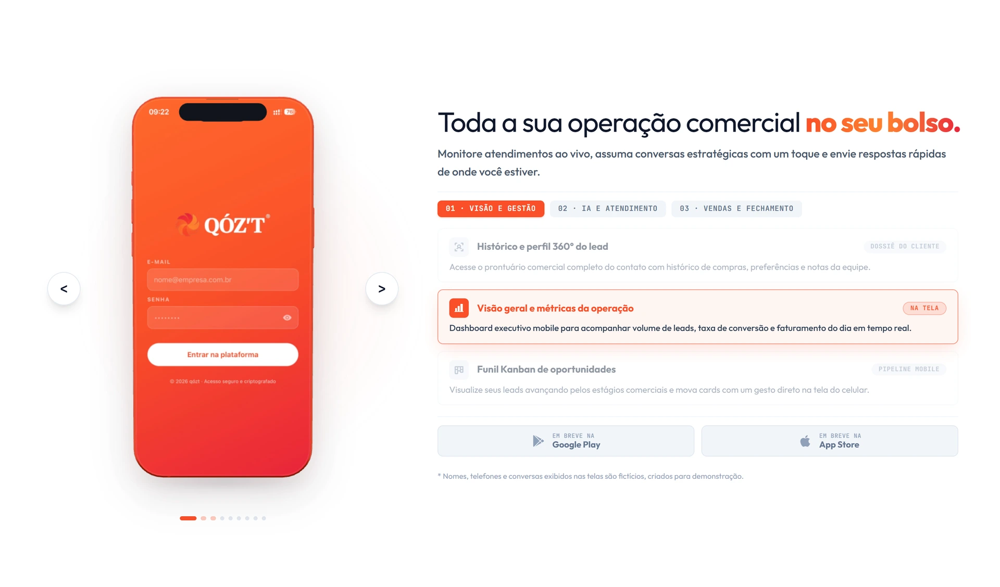

Proposta e demonstração
Mensagem, visual do produto e chamada para demonstração compõem a primeira tela. A hierarquia relaciona o que a solução propõe com a ação disponível.
Design & desenvolvimento
UI / UX
Conversa vira conexão.
 Ampliar
Ampliar Agentes comerciais inteligentes não são um produto que alguém pega na mão. A página precisa dar uma forma compreensível à proposta antes de pedir que o visitante dê o próximo passo.
A abertura aproxima a mensagem comercial de uma representação da interface. O convite para conhecer a solução aparece junto do que está sendo apresentado, sem depender da leitura de toda a página.
Mensagem, visual do produto e chamada para demonstração compõem a primeira tela. A hierarquia relaciona o que a solução propõe com a ação disponível.
A representação do produto tem presença na composição. Ela oferece um ponto concreto de leitura para uma proposta que, sozinha, seria abstrata.
O caminho comercial leva à demonstração. A página funciona como uma apresentação guiada, não como a interface operacional dos agentes.

AmpliarO escopo apresentado é o site público da QOZT. A página organiza conteúdo comercial, apresentação visual do produto e pontos de entrada para demonstração em uma mesma sequência.
A divisão entre títulos, blocos de explicação e chamadas permite que o visitante faça uma leitura rápida ou percorra o conteúdo em profundidade. Essa estrutura é o foco do caso; o software comercial mostrado dentro da página não é atribuído como parte desta entrega.
A captura foi feita no endereço público. Números e alegações que aparecem nela pertencem à comunicação do site e não são métricas de conversão comprovadas deste portfólio.
Visitar o site